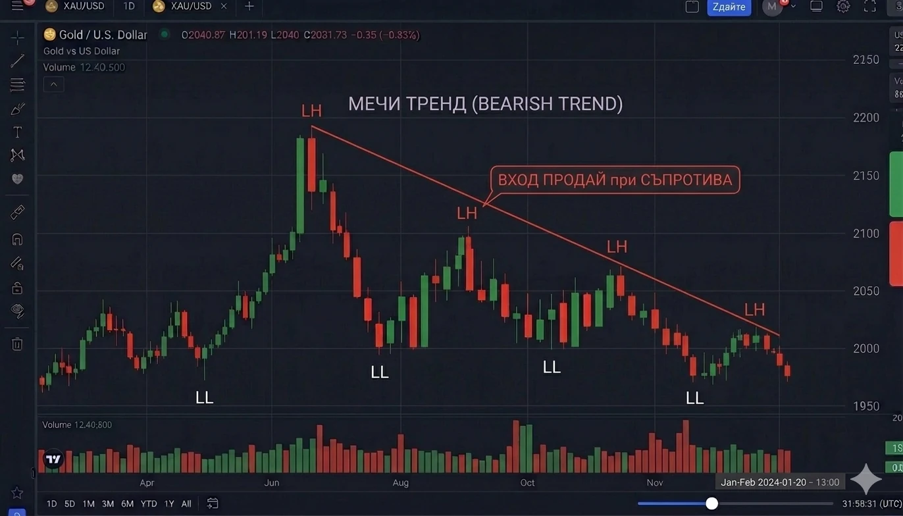
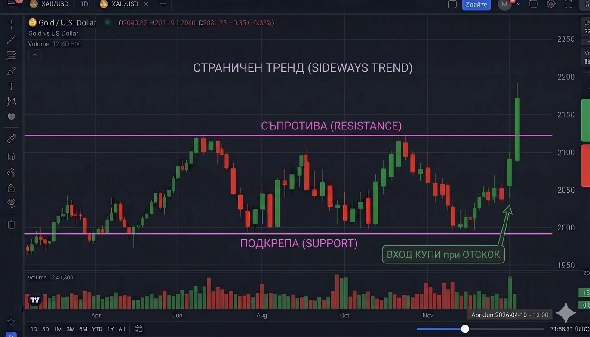

Bullish trend
Price forms higher highs (HH) and higher lows (HL). Buyers have the advantage.

A trend shows the market’s overall direction. By learning to recognise swing highs and lows, you can distinguish bullish, bearish and sideways conditions.
Markets do not always move up or down.
Price forms higher highs (HH) and higher lows (HL). Buyers have the advantage.
Price forms lower highs (LH) and lower lows (LL). Sellers have the advantage.

Price moves within a range without a consistent sequence of higher or lower highs and lows.

Compare each confirmed swing high with the previous high, and each new swing low with the previous low.
High 2,100 → new high 2,130. Low 2,050 → new low 2,075.
High 2,100 → new high 2,075. Low 2,050 → new low 2,020.
During a bearish H4 trend, price can temporarily form higher highs and higher lows on H1 as it moves up in a pullback. A change in the larger structure requires important H4 highs or lows to be broken and a new sequence to emerge.
Start with the bigger picture, then zoom in.
Calling every small rise a “new uptrend” or every brief drop a “new downtrend.” Work with clearly visible swing highs and lows, and always specify the timeframe you are analysing.
The previous high is 2,350 and the new high is 2,330. What is the new high called?
Answer: A Lower High (LH), because it is lower than the previous high.